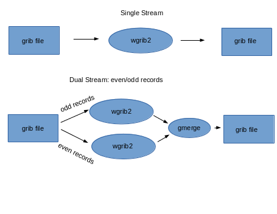

wgrib2ms - wgrib2 m(multiple streams) s(scalar data)
wgrib2mv - wgrib2 m(multiple streams) v(vector data)
Introduction
Wgrib2 was designed to be parallelized by what-may-be-called dataflow programming.
Data flows into a black box and data flows out. One way to parallelize is to
divide the data flow into N streams, process each stream separately and then recombine
the streams at the end of the processing. For example, some wgrib2 operations
can be doubled in processing speed if you run two copies of wgrib2 and let
one copy process the even grib messages (records) and the other process the
odd messages. The grib output of the two copies need to be recombined by
a merging program.

Wgrib2ms is a shell script that allow you parallelize your wgrib2 commands
by running N copies of wgrib2 by dividing the file into N streams. One
common operation that needs parallelization is regridding using the
-new_grid option. The
-new_grid option has a unique requirement that
zonal wind must be followed by the corresponding meridional wind in order to accuractely
determine the winds near the pole. We can use this data-flow parallelation by
creating a file which contains both components of the wind in the same grib message
by using submessages (vector). Once the grib file has the vectors in the same grib message,
the shell script, wgrib2mv, can be used to parallelized the regridding by
-new_grid.
wgrib2ms
Simple Usage
Each grib message has one field
run in 1 stream: wgrib2 FILE (options)
run in N streams: wgrib2ms N FILE (options) N > 1
generate script to run in N streams: wgrib2ms -N FILE (options) N > 1
* restrictions on the options that work with wgrib2ms
Wgrib2ms runs wgrib2 in N streams and combines the grib output at the
end. For example,
wgrib2ms 4 IN.grb -set_grib_type c2 -ijsmall_grib 1:10 20:40 OUT.grb
An easy-to-read version of the shell code that is generated by wgrib2ms,
1: mkfifo pipe1 pipe2 pipe3 pipe4
2: wgrib2 -for_n 1::4 IN.grb -set_grib_type c2 -ijsmall_grib 1:10 20:40 pipe1 &
3: wgrib2 -for_n 2::4 IN.grb -set_grib_type c2 -ijsmall_grib 1:10 20:40 pipe2 &
4: wgrib2 -for_n 3::4 IN.grb -set_grib_type c2 -ijsmall_grib 1:10 20:40 pipe3 &
5: wgrib2 -for_n 4::4 IN.grb -set_grib_type c2 -ijsmall_grib 1:10 20:40 pipe4 &
6: gmerge OUT.grb pipe1 pipe2 pipe3 pipe4
7: wait
8: rm pipe1 pipe2 pipe3 pipe4
line 1: make 4 pipes
lines 2-5: run 4 copies of wgrib2 in background, grib output to the pipes
each copy of wgrib2 processes every 4th field
lines 6: gmerge reads grib messages from the 4 pipes in round-robin fashion and
writes it out to OUT.grb
The advantage of this code is that there are no temporary disk files and the merging
of the results of the 4 streams is done at the same time as the wgrib2 processing.
wgrib2mv
Regridding using -new_grid
Paralleling the regridding process is an almost trivial parallelization.
Regridding the Z500, Z1000 and T100 fields can be done independantly. The only
problem is in regridding vector quantities near the pole. For vector quantities,
one converts the vectors to a 3-d vector (x,y,z), interpolate the 3-d vectory and then project
it to the surface. So the two components of the vector need to be stored
in the same grib message, and the then the parallelization becomes easy.
Wgrib2mv is like wgrib2ms except it requires that the input grib file
have the scalars in their own grib message, and have the vectors
have the vector components saved as submessages in their own grib message.
The output of wgrib2mv, are in a like format.
Wgrib2mv is for regridding using -new_grid.
This option requires the various vector fields (see vectors)
be processed together. To prevent the vector components from being processed by different copies
of wgrib2, the vector components are put in the same grib message. Using wgrib2 v3.0.0, making
the file is easy
$ wgrib2 IN.grb -new_grid_order OUT.grb ERROR.grb
If there is an unmatched vector field (error), the field will be written to ERROR.grb.
So ERROR.grb should be an empty file. Once the data are prepared, you can run wgrib2mv on it.
$ wgrib2mv 4 OUT.grb -new_grid_winds earth -new_grid ncep grid 3 grid3.grb
This regrids the file using 4 threads.
Output options that can be used by wgrib2ms/wgrib2mv
- -grib
- -grib_out
- -ijsmall_grib
- -new_grid (wgrib2mv, wgrib2ms if vectors are set to none)
- -small_grib
- all other output options should not be used
wgrib2m restrictions on the output options
- Each output option must write to a different file
- Each output option must write to the output file for every record processed.
- You cannot use -if to select the record to be output (see restriction 2)
- Output options can only write grib (ex. -netcdf, -cvs are not allowed)
wgrib2 reading options supported by wgrib2m
- processing a regular grib file (not a pipe)
- -i (reading inventory from stdin) added v1.1
wgrib2 options that work differently in wgrib2m
Some options still work but may behave differently in wgrib2m.
Since the processing is split in to N streams, each copy of
wgrib2 will not see all the records. For example, you
may want to calculate the 1000mb-500mb thickness. If one
copy of wgrib2 gets the 1000 mb Z and other one gets the 500 mb Z,
then you can't calculate the thinkness. This will affect
- -rpn
- -import (all types)
- memory, and temporary files
Usage
wgrib2ms N (wgrib2 subset options)
for N > 1, execute wgrib2 (wgrib2 subset options) in N streams
for N < -1, produces script running -N streams
wgrib2mv N (wgrib2 subset options)
for N > 1, execute wgrib2 (wgrib2 subset options) in N streams
for N < -1, produces script running -N streams
v1.1+
grep ":HGT:" nam.idx | wgrib2ms 3 -i nam.grb2 -set_grib_type c3 -grib_out HGT.c3
v1.2 wgrib2m was renamed wgrib2mv, added wgrib2ms
can write to stdout by the "-" filename. Note only one output option can write to stdout
Producing a Script
Normally wgrib2ms is used to run wgrib2 in N streams. However, you might
use wgrib2ms to generate a script that runs wgrib2 in N streams.
You can then alter the script to run in your environment. For example,
NCEP operational scripts are not suppose to write files in /tmp. However,
that is the default location for pipes. NCEP operational scripts are
suppose to use $WGRIB2 instead of wgrib2. Again, another change that needs
to be done.
Example:wgrib2mv
A major use of wgrib2mv is to regrid a file. Suppose we only want to do a vector
interpolation of (UGRD,VGRD) and (UGRD,VGRD) and only (UGRD,VGRD) are already
stored in the same grib message. In addition suppose we want to interpolate
to ncep grid 221. THen the 1 stream version is.
wgrib2 IN.grb -new_grid_winds grid -new_grid ncep grid 221 OUT221.grb
This will put UGRD and VGRD in their own grib messages. Suppose we want them in
the same grib message, the you can do
wgrib2 IN.grb -inv /dev/null -new_grid_winds grid -new_grid ncep grid 221 - \
wgrib2 - -ncep_uv OUT221.grb
To parallelize (8 streams) the above you can do
wgrib2mv 8 IN.grb -inv /dev/null -new_grid_winds grid -new_grid ncep grid 221 OUT221.grb
wgrib2mv run M(ultiple streams) using V(ector in own grib message).
Now suppose we only want to treat (UGRD,VGRD) and (USTR,VSTM) as vectors. In addition,
we want to bilinearly interpolate all the fields except to SOTYP and VGTYP which are
to be nearest neighbor values. For one stream,
wgrib2 IN.grb -new_grid_winds earth -new_grid_interpolation bilinear \
-new_grid_vectors "UGRD:VGRD:USTM:VSTM" \
-if ":(VGTYP|SOTYP):" -new_grid_interpolation neighbor -fi \
-new_grid ncep grid 221 - -inv /dev/null | wgrib2 - -ncep_uv OUT.grb
The 4 stream version is
wgrib2 IN.grb -submsg_uv tmpfile
wgrib2mv 4 tmpfile -new_grid_winds earth -new_grid_interpolation bilinear \
-new_grid_vectors "UGRD:VGRD:USTM:VSTM" \
-if ":(VGTYP|SOTYP):" -new_grid_interpolation neighbor -fi \
-new_grid ncep grid 221 - -inv /dev/null | wgrib2 - -ncep_uv OUT.grb
Example 1: Jpeg2000 to complex packing
Jpeg2000 packing is known for good compression at the expense of speed.
Suppose you have downloaded some jpeg2000 compressed files and want to
work with them. You speed up your processing by converting the files
from jpeg2000 to complex-3 in parallel.
$ wgrib2ms 8 jpeg2000.grb -set_grib_type c3 -grib_out fast.grb
The above runs 8 copies of wgrib2 to speed up the processing. On
an 8 core machine, the command will be quite quick.
Example 2: making a cookie-cutter subset grib file
Making a cookie cutter subset of file can be done in parallel.
$ wgrib2ms 8 big_grid.grb -set_grib_type c3 -small_grib 10:40 20:60 small_grid.grb
The above runs 8 copies of wgrib2 to speed up the processing. On
an 8 core machine, the command will be quite quick.
Observations
Using Centos 6.4 on a FX 8320 (8 core), there was little speed up with N > 4 when
using 1 MB grib messages. Using grib messages < 64KB (pipe buffer size), the
processing scaled better with the number of streams. Centos 6.4 has an old
kernel which limits the pipe size to 64KB. With a newer kernel, you
can increase the pipe size which will help speed up the wgrib2m. Some speedup
may be realized if gmerge were properly threaded.
Code location: https://www.ftp.cpc.ncep.noaa.gov/wd51we/wgrib2_aux_progs/
See also:
-new_grid,
-new_grid_order,
-new_grid_winds,
-wgrib2ms,
|